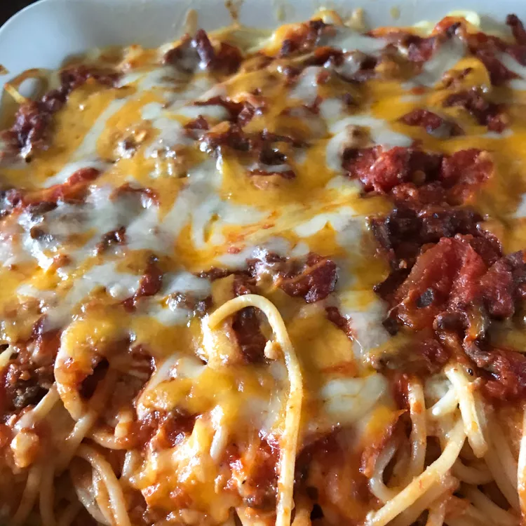

Spaghetti

Description
World's best spaghetti! You'll find detailed instructions here.
Ingredients
- Noodles
- Beef and onion
- Sauce
- Salt
- Eggs
- Cheeses
- Butter
Steps
- Boil and drain the spaghetti
- Cook the beef and onion together, then drain off the excess oil
- Add the sauce and salt. Whisk the eggs, Parmesan, and butter in a separate bowl
- Toss the spaghetti in the Parmesan mixture
- Layer the ingredients in a prepared baking dish according to the detailed recipe
- Cover and bake for 40 minutes. Sprinkle with mozzarella, then keep baking until the cheese is melted